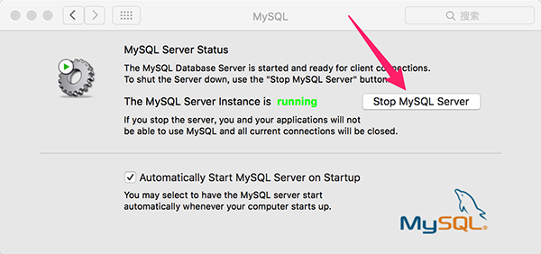

启动数据库设置初始密码
这一小节介绍在Mac OS、Linux、Windows上启动关闭重启MySQL服务，以及部分图形化界面对服务的操控。安装完成后，可以使用 service 命令启动 mysql 服务，在Mac上service命令不存在。
命令行启动关闭重启MySQL服务
在命令行终端启动 MySQL 非常方便，下面大概介绍几个平台通过命令启动服务的方法。
查看服务是否启动
# 还可以这么查看，MySQL服务器是否启动
ps -ef | grep mysqld
# 查看服务运行的状态
service mysqld status
Mac OS X 下命令操作
在 Mac 系统下操作起来就非常方便了。安装完之后就可以在终端上运行全局命令 mysql.server 命令，假设这个命令没有，你在系统的MySQL安装目录中找到 mysql.server 命令，运行它是一样的效果。
mysqld start
mysql.server start # 1. 启动
mysql.server stop # 2. 停止
mysql.server restart # 3. 重启
当你安装过 MySQL 并没有找到 mysql.server 命令，那这时你需要找到安装目录中的 mysql.server 命令工具了，如 sudo /usr/local/mysql/support-files/mysql.server start
Linux 下命令操作
Linux生态系统中对服务的操作有点区别。其实在 Mac 系统下也可以直接 mysqld start 来启动服务。
- 启动：
service mysqld start - 停止：
service mysqld stop - 重启：
service mysqld restart - 查看状态：
service mysqld status - 查看状态：
systemctl status mysqld.service
systemctl是一个systemd工具，主要负责控制systemd系统和服务管理器，在 Linux 系统中可以通过它来启动 mysql 服务。
启动过程中有可能会报错，错误处理，通过 systemctl status mysqld.service 和 journalctl -xe 命令查看服务启动失败的原因。
systemctl status mysqld.service
● mysqld.service - SYSV: MySQL database server.
Loaded: loaded (/etc/rc.d/init.d/mysqld)
Active: failed (Result: exit-code) since 三 2016-11-02 22:14:36 EDT; 11s ago
Docs: man:systemd-sysv-generator(8)
Process: 14940 ExecStart=/etc/rc.d/init.d/mysqld start (code=exited, status=1/FAILURE)
11月 02 22:14:34 localhost.localdomain systemd[1]: Starting SYSV: MySQL database server....
11月 02 22:14:35 localhost.localdomain mysqld[14940]: MySQL Daemon failed to start.
11月 02 22:14:35 localhost.localdomain mysqld[14940]: Starting mysqld: [FAILED]
11月 02 22:14:36 localhost.localdomain systemd[1]: mysqld.service: control process exited, code=exited status=1
11月 02 22:14:36 localhost.localdomain systemd[1]: Failed to start SYSV: MySQL database server..
11月 02 22:14:36 localhost.localdomain systemd[1]: Unit mysqld.service entered failed state.
11月 02 22:14:36 localhost.localdomain systemd[1]: mysqld.service failed.
# 查看配置文件 my.cnf 的位置
whereis my.cnf
# 输出： my: /etc/my.cnf
# 编辑
vi /etc/my.cnf
里面有个 log_error=/var/log/mysqld.log 的配置，通过命令 tail -25 /var/log/mysqld.log 查看 MySQL 错误日志
2016-01-20T10:00:19.935771Z 0 [ERROR] /usr/sbin/mysqld: Can't create/write to file '/var/run/mysqld/mysqld.pid' (Errcode: 2 - No such file or directory)
2016-01-20T10:00:19.935795Z 0 [ERROR] Can't start server: can't create PID file: No such file or directory
160120 18:00:20 mysqld_safe mysqld from pid file /var/run/mysqld/mysqld.pid ended
上面日志错误说，MySQL服务在启动的时候，不能创建pid文件。前去看一下 mysqld 文件是否存在，不存在创建 mysqld 目录。
# 创建 mysqld 目录
mkdir -p /var/run/mysqld/
# 启动MySQL
/etc/init.d/mysqld start
# 输出下面内容
# Starting mysqld (via systemctl): Job for mysqld.service failed because the control process exited with error code. See "systemctl status mysqld.service" and "journalctl -xe" for details.
# [FAILED]
创建 mysqld 目录还是启动报错，按照下面命令尝试解决问题
ls -ld /var/run/mysqld/
# mysqld 文件夹如果不存在通过命令创建
mkdir /var/run/mysqld
# 会输出下面内容
# drwxr-xr-x. 2 mysql mysql 60 11月 2 22:15 /var/run/mysqld/
chown mysql.mysql /var/run/mysqld/
/etc/init.d/mysqld start
通过查看目录 /var/run/mysqld/ 的属主和属组还是root，mysql并不能在其中创建文件，后修改该目录的属主和属组，启动OK。
创建脚本cat start-mysql.sh，这个问题每次都会出现，因为Centos7上MySQL5.7.12系统不兼容启动失败， 每次开机后手动执行，或放在定时调度里。
#!/bin/bash
mkdir -p /var/run/mysqld/
chown mysql.mysql /var/run/mysqld/
/etc/init.d/mysqld start
Windows 下命令操作
Windows平台操作起来有点不顺手，个人感觉 Windows 的DOS太难用了，下面简单的介绍一下操作过程。先找到 MySQL 的安装位置，如我的电脑的安装位置是：C:\Program Files\MySQL\MySQL Server 5.7，我就执行这样的操作：开始->运行->输入“cmd”开启命令行，然后输入“C:”。通过命令进入到 MySQL Server 5.7 的 bin 目录下，输入 MySQL 命令行的服务启用命令，如下：
# net start [mysql服务名]
# 启动 mysql 服务
net start mysql
# 停止 mysql 服务
net stop mysql
有很多情况可能导致无法启动 MySQL，常见解决方法如下：
- 在 CMD 命令中断运行这条命令 C:\Program Files\MySQL\MySQL Server 5.7\bin\mysqladmin-u root -p shutdown 来关闭MYSQL，如果有密码根据提示输入密码即可。
- 在 CMD 命令中断，执行net start mysql启动 MySQL，参考上面方法来启动 MySQL 服务。
图像界面启动关闭重启MySQL服务
Mac OS X 下操作
在 Mac 系统下如果你官方下载安装就可以在系统偏好设置 > MySQL 里面点击 Stop MySQL Server 按钮进行启动关闭。

通过 XAMMPP 安装的 MySQL ，这个软件安装之后会自动安装 Apache + MySQL + PHP 对于初学者特别方便，新版本是默认安装Apache + MariaDB + PHP + Perl。
Windows 下操作
Windows 系统下启动关闭重启MySQL服务。
查看初始密码
默认情况下MySQL是有个初始密码，知道了初始密码才能改密码。
[root@localhost home]# grep 'temporary password' /var/log/mysqld.log
2017-07-17T13:40:11.842835Z 1 [Note] A temporary password is generated for root@localhost: b&iu(sf;>ws
设置初始化密码
启动后我们需要简单配置一下 mysql ，默认安装以后 mysql 的 root 用户是没有密码的，对于生产环境来说，这肯定是不行的，另外还有一些安全相关的设置，可以使用下面这行命令去配置一下，它是一个向导，问你一些问题，你要给出答案，比如是否要设置 root 用户的密码， 密码是什么等等。
mysql_secure_installation
Enter current password for root (enter for none):
# 解释：输入当前 root 用户密码，默认为空，直接回车。
Set root password? [Y/n] y
# 解释：要设置 root 密码吗？输入 y 表示愿意。
Remove anonymous users? [Y/n] y
# 解释：要移除掉匿名用户吗？输入 y 表示愿意。
Disallow root login remotely? [Y/n] y
# 解释：不想让 root 远程登陆吗？输入 y 表示愿意。
Remove test database and access to it? [Y/n] y
# 解释：要去掉 test 数据库吗？输入 y 表示愿意。
Reload privilege tables now? [Y/n] y
# 解释：想要重新加载权限吗？输入 y 表示愿意。
你安装成功后，可以查看一下 MySQL 版本，mysql --version，如果版本并非你所使用的版本，你可以参考这里进行升级数据库操作Centos6下升级MySQL数据库。
启动报错处理
下面是我尝试在Mac上启动MySQL报错
启动失败
sudo /usr/local/mysql/support-files/mysql.server start
Password:
Starting MySQL
. ERROR! The server quit without updating PID file (/usr/local/mysql/data/localhost.pid
通过日志查看报错信息
# 编辑配置文件
sudo vim /etc/my.cnf
# 在配置文件最后添加一行错误日志输入的配置
log_error = /usr/local/mysql/data/error.log
上面添加完成之后，重新启动再查看日志
sudo /usr/local/mysql/support-files/mysql.server start
tail -100 /usr/local/mysql/data/error.log
日志显示错误一
2017-01-19T03:48:24.695505Z 0 [ERROR] InnoDB: Unable to lock ./ibdata1 error: 35
2017-01-19T03:48:24.695540Z 0 [Note] InnoDB: Check that you do not already have another mysqld process using the same InnoDB data or log files.
日志显示 mysqld 进程使用相同的InnoDB data 文件或日志文件，通过 ps -ef | grep mysql | grep -v grep 查看是否有该进程，发现果然有，这时候你需要杀掉该进程，我在我本地是杀不掉的，于是我尝试使用 mysqld 启动MySQL，启动成功。
sudo /usr/local/mysql/bin/mysqld restart
日志显示错误二
[ERROR] InnoDB: The innodb_system data file 'ibdata1' must be writable
上面的错误信息说的是 ibdata1 文件不可写。ibdata1 是InnoDB的共有表空间，默认情况下会把表空间存放在一个文件ibdata1中，（此原因会造成这个文件越来越大）。所以大概能猜测是 mysql 用户的权限不够了。所以再给 ibdata1 目录分配一下权限即可。
这个时候需要查看一下mysql 安装目录权限。使用 chown 改变了整个 mysql 目录的权限，这是一个非常不好的习惯。
cd /usr/local/mysql
sudo chown -R _mysql:_mysql *
这里需要注意的是，Mac OS系统下，mysql 的用户组和用户名都是 _mysql，Linux 是 mysql。然后再重启 MySQL 你就完事大吉了。
上面调试定位错误的方法非常有用。我通过这个方法多次解决各种问题。